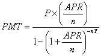

|
ISP 120 |
Activity 19: Loan Payments |
Week 10 |
All group activities must include a statement signed by all members of your group that each group member fully participated in the activity. Save it to the desktop and save frequently during the hour.
Loan Payment Formula (Installment Loans):

where P = starting loan principal (amount borrowed)
PMT = regular payment amount
APR = annual percentage rate (as decimal)
n = number of payment periods in a year
Y = loan term in years
1. Suppose you took out a $68,000 student loan to pay for 4 years tuition at DePaul with an interest rate of APR=9% and a loan term of 10 years.
a. What are your monthly payments?
b. How much will you pay over the lifetime of the loan?
c. What is the interest you will pay on the loan?
d. Suppose that you would like to pay the loan off in 7 years instead on 10. What monthly payments will you need to make assuming the same interest rate? How much will you pay over the lifetime of the loan? What is the interest you will pay on the loan?
e. Compare the total amounts you'll pay over the loan term if you pay the loan off in 10 years versus 7 years. How much do you save?
2. Suppose you need a loan of $200,000 to buy your new home. The bank offers a choice of a 30-year loan at an APR of 8%, or a 15-year loan at 7.5%.
a. What would your monthly payment be for the 30 year loan? The 15 year loan?
b. How much will you pay over the lifetime of the 30 year loan? The 15 year loan?
c. How much interest will you pay on the 30 year loan? The 15 year loan?
d. An alternative strategy for the mortgage is to take out the 30-year loan at 8%, but to try to pay it off in 15 years by making larger payments than required. How much would you have to pay each month? Discuss the pros and cons of this strategy.